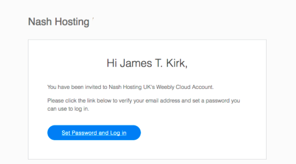
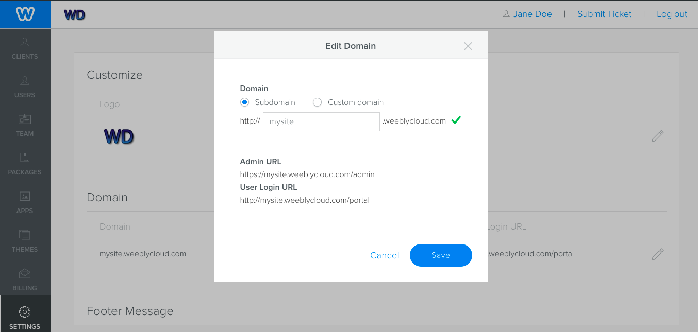
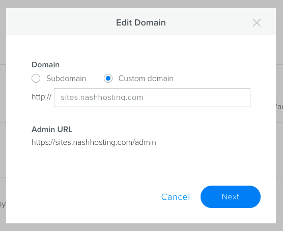
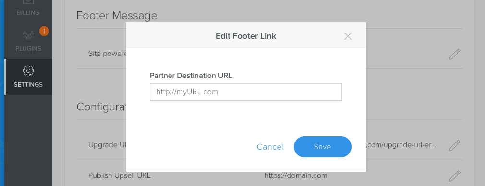
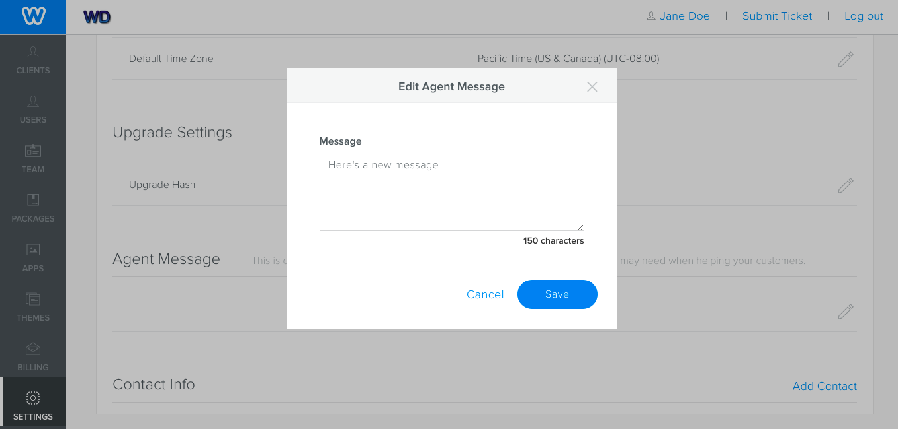
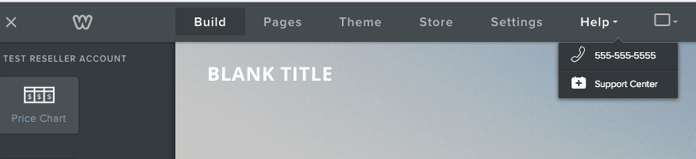
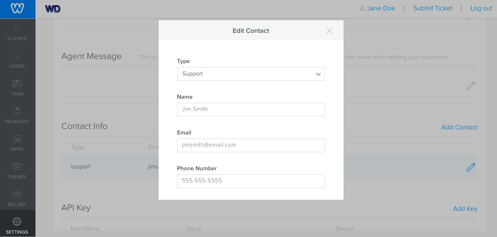

You use the Settings tab of the Weebly Cloud Admin portal to configure your cloud account. You can add your logo and other company links and contact info, configure locale settings like time and date, set up messages for our support team, set up your domain and URLs, contacts, and access your API keys.
Brand Your Sites and the Cloud Admin
You can brand Weebly Cloud for Designers by adding your company’s name and uploading your company’s logo and a fav icon. Once configured, your company’s name displays in a number of places, such as in the Site Editor and in invitation emails.
For example, here’s an email sent inviting a new user showing Nash Hosting’s name.

Once uploaded, your logo displays in the Cloud Admin as shown here:
You can set a domain to access both the Cloud Admin (http://your_domain/admin) and the User portal (http://your_domain/portal), and that displays in the user’s address bar when using the Site Editor. You can choose to use a subdomain of weeblycloud.com or you can use a custom domain.
Note: If you don’t configure a domain, you will not be able to generate and send emails from the Cloud Admin and you will not have access to the User portal.
To set a subdomain:
From the Cloud Admin, click the Settings tab.
In the Domain area, click the Edit icon.
To use a subdomain of weeblycloud.com, click Subdomain, enter the subdomain to be used, and click Save. If the subdomain is available, a green checkmark displays. The subdomain will be applied to both the Cloud Admin and the User portal, and to the Site Editor URL.

Set your domain
To use a custom domain, click Custom domain, enter the domain you’d like to use and click Next.

You now need to add a CNAME that points weeblycloud.com to the DNS for your domain. Follow the instructions in the resulting dialog.
Email URL
You must add a URL to a specific page about your company that will be used as the return email address on emails automatically sent by the Cloud Admin, such as the team member and client invitations. This URL is required.
Note:
While the emails will appear to be from this destination, they are actually sent from a Weebly IP address. Because of this, you need to create an SPF record for the Weebly IP. More info here.
To set the URL:
From the Cloud Admin, click the Settings tab.
In the Footer Message area, click the Edit icon and enter the URL.

Configure Basic Settings
You can configure locale settings for your sites, such language, time zone, and you can also configure upgrade and upsell URLs.
To configure basic settings:
From the Cloud Admin, click the Settings tab.
In the Configuration area, click the Edit icon and enter the appropriate info for the following:
Default User Language: Select the default language displayed to your team and clients. They can always change this by selecting a different language from the Settings tab of the editor, or if enabled, the language picker in the User Portal.
Default Time Zone: Select the default time zone used by the Site Editor.
Default Date Format: Select how you want dates displayed by default. You can choose either MM/DD/YYYY or DD/MM/YYYY.
Default Time Format: Select how time should display by default - either 12 or 24 hour.
Note: You don’t need to worry about the Upgrade URL or hash. These are used by Weebly enterprise accounts to automatically upgrade their customers when they try to access functionality not covered by their current plan. As a Designer, you will likely upgrade your clients’ plans manually. If you’re interested in automatic upgrading, contact your account representative.
Create a Support Message
You can create a message that displays to Weebly agents when you contact Weebly Support. This message might include important information they need to know, like a specific support process.
To create a message:
From the Agent Message area, click the Edit icon and enter your message (up to 125 characters).

Set a message to display to Weebly agents
Set Contact Info
You can create three different ways that you can be contacted:
Support: Shown to your clients in the Weebly editor. Your phone number and a link to your URL (shown as Support Center) display in the Help menu. All other entered information for this type of contact displays to the Weebly support team, in the case where the client contacts Weebly directly.

Billing: Shown to Weebly support. This contact should be someone who can handle billing inquiries.
Technical: Shown to Weebly Support. This contact should be someone equipped to handle technical issues.
To add a contact:
From the Cloud Admin, click the Settings tab.
From the Contact Info area, click the Add Contact link and select the contact type
Enter the needed information. You can only create one contact for each type.
You can edit a created contact by clicking the Edit icon.

View and Create API Keys and Secrets
API keys and secrets are used during API calls to verify the sender of a request. You need to create a key to use the API.
To create a key:
From the Cloud Admin, click the Settings tab.
From the the API Key area, click the Add Key link.
Enter a name of your choice.
The API key and secret are automatically generated for you and cannot be changed. Click Save Key when done.
Click the Show link to view the API secret. Click the Edit icon to edit the name of the key or to delete the key.